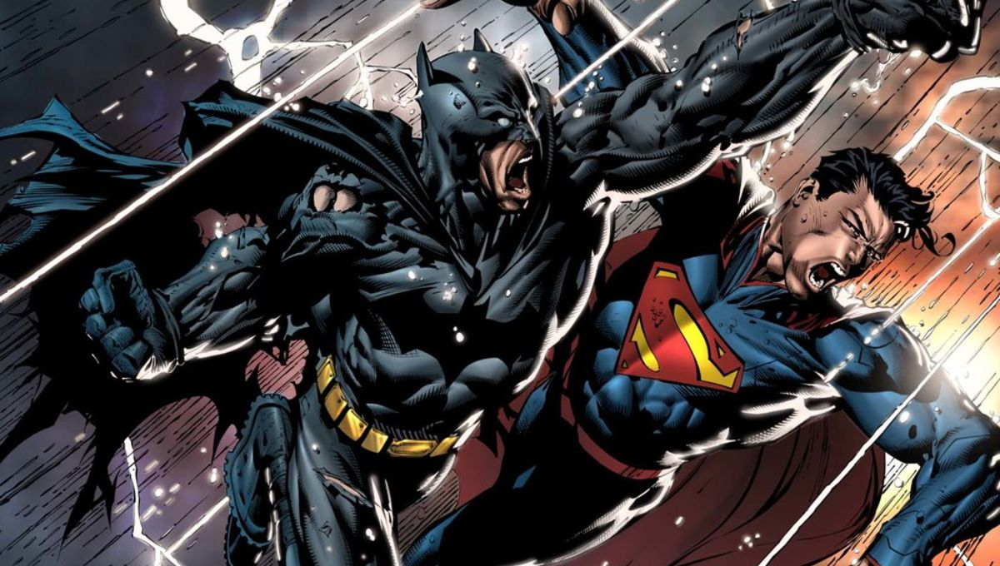

About Batman
The Dark Knight, a vigilante, protector of citizens in Gotham City from evil and crime.
Battle between Batman and Superman.
Batman's Power's and Abilities
- He's a genius.
- He's a brilliant strategist.
- He's a magnificent martial artist.
- He has a butler.
Batman's associates
Batman is usually lonely but has a butler called Alfred as his best compannion. He is awesome. Click on the links below to read more about them